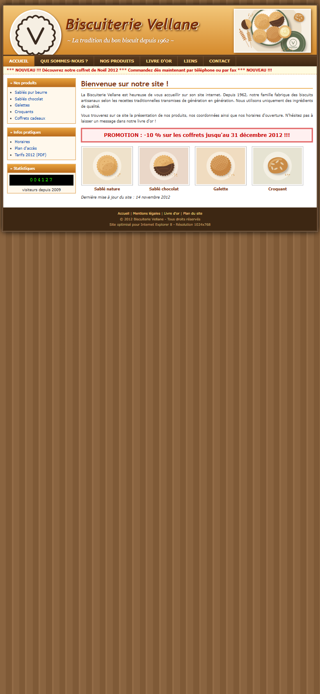

Plus de la moitié des visites se font sur un téléphone. Un site ancien s'y affiche en tout petit : le visiteur doit zoomer, et souvent il repart.
La maquette montre votre page pensée d'abord pour l'écran du téléphone : textes lisibles, boutons faciles à toucher.
